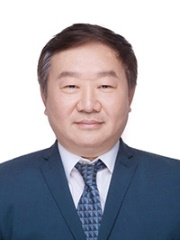

学院通知 · 科研创新
会议征稿｜2026年第五届电力和能源前沿亚洲会议(ACFPE 2026)
发布时间：2026-05-08
2026年第五届电力和能源前沿亚洲会议(ACFPE 2026) 2026 5th Asian Confer e nce on Frontiers of Power and Energy (ACFPE 2026) 【2026/10/2 2 -2 4 】中国成都 https://acfpe.org/ 【会议简介】 2026年第五届电力和能源前沿亚洲会议 (ACFPE 2026) 将于2026年10月22日至24日在中国成都举行，会议由四川大学和四川省电机工程学会联合主办，香港机械工程师学会、Global Energy Interconnection、《全球能源互联网》和全球华人电力与能源学会提供支持，《中国电机工程学报》、 CSEE Journal of Power and Energy Systems (CSEE JPES) 等提供媒体支持。会议主题“迈向碳中和：亚洲能源系统的韧性、数字化与市场协同”。 会议诚邀能源与电力领域的专家、研究人员和学者参与会议、共同探讨、分享智慧，讨论能源转型实施路径和绿色发展创新思路，研讨新型电力系统发展举措，促进电力和能源的可持续发展。 荣誉主席 总主席 刘俊勇 四川大学 刘友波 四川大学 【会议征文信息】 l 论文收录： 1）在符合IEEE Xplore的范围和质量要求的情况下，所有 录用且宣读 的论文将被提交到IEEE Xplore审核。出版后由出版社提交 Engineering Village, Scopus, Web of Science等机构审核和检索。 2) 优秀且经拓展的文章（录用且宣读）将在会后被推荐至Cyber-Physical Energy Systems（ ISSN: 3050-7448)期刊出版。 3）优秀且经拓展的文章（录用且宣读）将在会后被推荐至Energy Engineering(ISSN:1546-0118)期刊出版。 ACFPE 2026已被列入IEEE会议列表！ l 专题征稿 （更多专题持续更新中：https://www.acfpe.org/Session.html） 专题一：人工智能赋能的新型电力系统稳定机理解析与自适应控制技术 专题主席：王渝红，四川大学 专题副主席：郑宗生，四川大学 高仕林，四川大学 专题 二 ：人工智能赋能新型电力系统电能质量分析与治理 专题主席： 张逸，福州大学 l 会议征稿： 征稿主题包含但不限于： Track1：先进能源转换 Track2：人工智能与数据驱动技术在智能电网中的应用 Track3：基于DER的网格边缘感知与控制 Track4：储能应用与氢能 Track5：大规模可再生能源接入 Track6：电力系统低碳技术 Track7：多能源系统运行与规划 Track8：电力市场和经济 Track9：智能电网运行与规划 详情请查询官网信息：https://acfpe.org/CFP.html l 论文提交： 投稿地址： https://cmt3.research.microsoft.com/ACFPE2026 扫码投稿 文章模板： Word: https://www.acfpe.org/IEEE-conference-template-letter.doc LaTex: https://www.acfpe.org/IEEE-Conference-LaTeX-template_7-9-18.zip l 重要日期： 投稿截止日期： 202 6 年 6 月 15 日 l 会议日程： 此日程仅供参考，以最终公布日程为准 202 6 年10月2 2 日 - 会议签到/资料领取/工业参观 202 6 年10月 23 日 - 开幕式/专家报告/专题论坛 202 6 年10月 24 日 – 技术论坛/学术考察（待定） l 征集报告者及听众 1. 报告者：只参加会议作报告，不出版论文，只需要将摘要提交给会务组，经过评审后，将告知结果。注册成功的报告，将列入会议日程。有意者将摘要发送到会议邮箱acfpe@vip.163.com 2. 听众：诚挚邀请对电力、能源领域感兴趣的研究员及专家学者参与此次会议，您可以注册为听众，注册成功后可以参加此次会议的所有议程。 l 联系方式 曹 老师 (会议秘书) 电话: 19150956004（微信同号） 邮件: acfpe@vip.163.com 官网 : https://www.acfpe.org/
